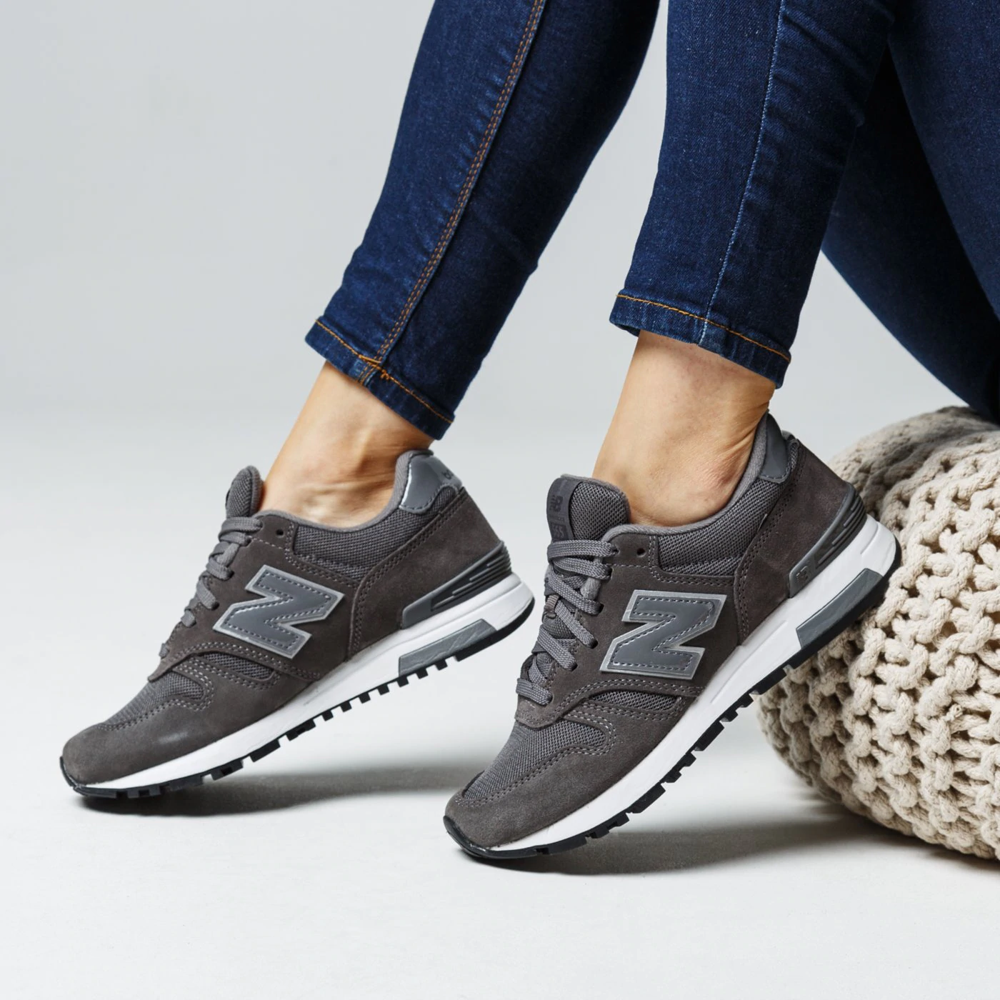

Sneakersy przez cały rok
Nowi rok, nowi my, znacie to? A znacie osoby, które mimo różnych postanowień noworocznych na pewno nie zmieniają jednej rzeczy…? I niezależnie od aury panującej na zewnątrz, nigdy nie rezygnują z ulubionych sneakersów, bo ich miłość do tego typu butów jest tak wielka? Oczywiście, każdy zna! A jakie buty królują przede wszystkim? Nikogo nie zaskoczymy. Z półek sklepowych znikają najczęściej między innymi sportowe modele Nike, adidas i New Balance. Przyjrzyjmy się zatem najpopularniejszym modelom wszystkich sneakerheadów.
New Balance
 Zaczynamy od New Balance. Ich nazwa została zainspirowana… kurami! Ptaki choć niepozorne, pomogły Williamowi J. Riley’owi, założycielowi marki, stworzyć niezwykle wygodne, oparte na podstawie trójkąta, specjalne wkładki do butów. Podobnie jak te zwierzęta utrzymujące równowagę na trzech pazurach, wkładki również miały za zadanie w podobny sposób podtrzymywać poprawną postawę ciała. I tak właśnie powstały buty gwarantujące absolutnie innowacyjny, komfortowy balans ciała. Stąd też właśnie wzięła się nazwa obuwia. Dzięki swojej nowoczesnej formule są idealnymi butami do biegania, ale w miejskiej dżungli pełnej streewearowego stylu, sprawdzają się tak samo dobrze. Bardzo lekkie, ze specjalnie zaprojektowaną podeszwą są synonimem stylu i choć mają ponad stuletnią tradycję, zaskakują swoją ponadczasowością.
Adidas
 Przyglądając się wszystkim modelom adidas, ciężko uwierzyć, że te pierwsze były robione z płótna wojskowego namiotu, a ich podeszwa z gumowej uszczelki od zbiornika na paliwo. Dzisiaj buty adidas noszą wszyscy. Zakładane podczas uprawiania sportów, zapewniają maksymalny komfort i wygodę. I choć na temat nazwy znaleźć można informację, że jest akronimem frazy „All Day I Dream About Sports”, nikogo nie dziwi ich widok na przykład podczas eleganckiego przyjęcia w połączeniu z garniturem u mężczyzn czy elegancką sukienką u kobiet. Marka doskonale wie jak sprawić, aby było o niej głośno i żeby każdy chciał kupić nową parę butów. Ogromna gama kolorystyczna butów daje możliwość dopasowania ich do dowolnej stylizacji, a modele wykonane z różnorodnych tworzyw zachwycają swoim designem i sprawiają, że można je nosić przez cały rok, niezależnie od aury panującej na zewnątrz.
Przyglądając się wszystkim modelom adidas, ciężko uwierzyć, że te pierwsze były robione z płótna wojskowego namiotu, a ich podeszwa z gumowej uszczelki od zbiornika na paliwo. Dzisiaj buty adidas noszą wszyscy. Zakładane podczas uprawiania sportów, zapewniają maksymalny komfort i wygodę. I choć na temat nazwy znaleźć można informację, że jest akronimem frazy „All Day I Dream About Sports”, nikogo nie dziwi ich widok na przykład podczas eleganckiego przyjęcia w połączeniu z garniturem u mężczyzn czy elegancką sukienką u kobiet. Marka doskonale wie jak sprawić, aby było o niej głośno i żeby każdy chciał kupić nową parę butów. Ogromna gama kolorystyczna butów daje możliwość dopasowania ich do dowolnej stylizacji, a modele wykonane z różnorodnych tworzyw zachwycają swoim designem i sprawiają, że można je nosić przez cały rok, niezależnie od aury panującej na zewnątrz.
Nike
 Nazwa legendarnej marki Nike pochodzi od imienia greckiej bogini: Nike, a zanim powstało hasło, które dzisiaj zna cały świat, czyli JUST DO IT! pierwszym sloganem marki było: „There is no finish line!”. Zdanie mówiące o tym, że absolutnie żadne granice nie istnieją, świetnie współgra z pojawiającymi się od tak wielu lat kolejnymi modelami, które za każdym razem zaskakują każdego. Air Max, Jordan, Joyride Nova, Future Speed, VaporMax, Force1, Air Force, Runner, Renew Lucent, Presto, Cortez, Pico, Freak, Tanjun… to tylko maleńka część modeli jakie Nike dało światu.
Nazwa legendarnej marki Nike pochodzi od imienia greckiej bogini: Nike, a zanim powstało hasło, które dzisiaj zna cały świat, czyli JUST DO IT! pierwszym sloganem marki było: „There is no finish line!”. Zdanie mówiące o tym, że absolutnie żadne granice nie istnieją, świetnie współgra z pojawiającymi się od tak wielu lat kolejnymi modelami, które za każdym razem zaskakują każdego. Air Max, Jordan, Joyride Nova, Future Speed, VaporMax, Force1, Air Force, Runner, Renew Lucent, Presto, Cortez, Pico, Freak, Tanjun… to tylko maleńka część modeli jakie Nike dało światu.